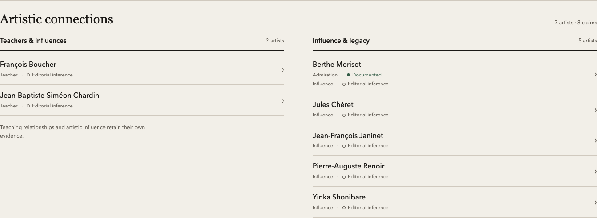
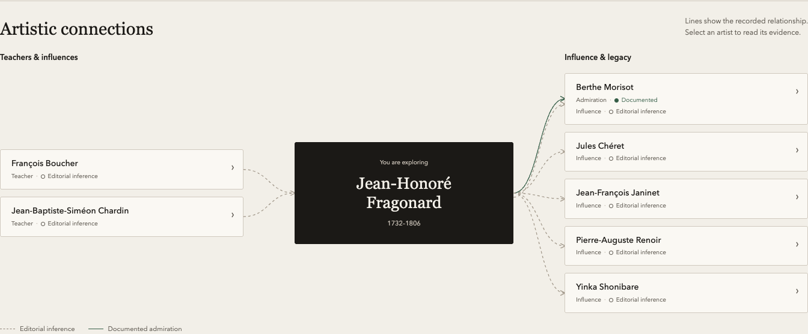
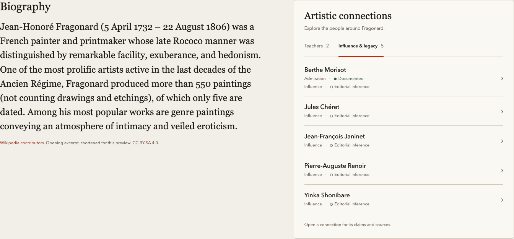
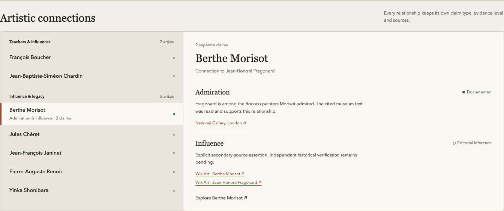

Four Artline concepts · Jean-Honoré Fragonard
Recommended · Both directions at a glance

Most visual · Direction becomes the layout

Most compact · Keeps the biography central

For deeper reading · Claims and sources together
